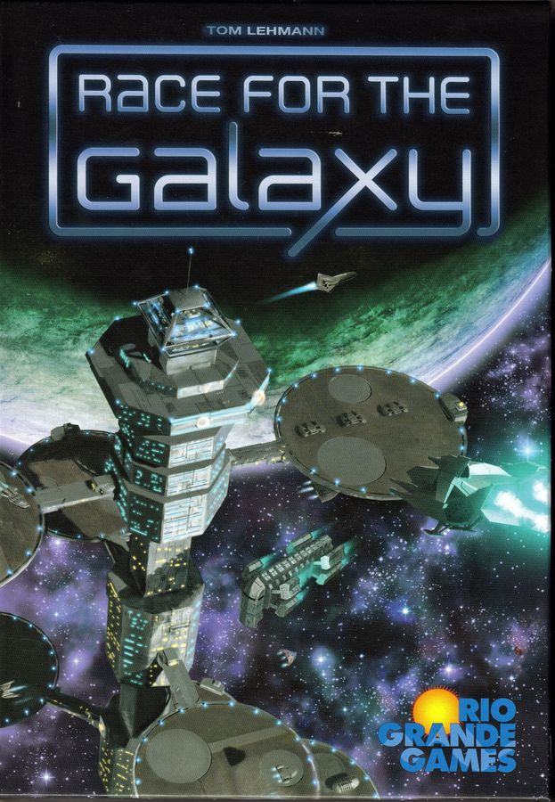
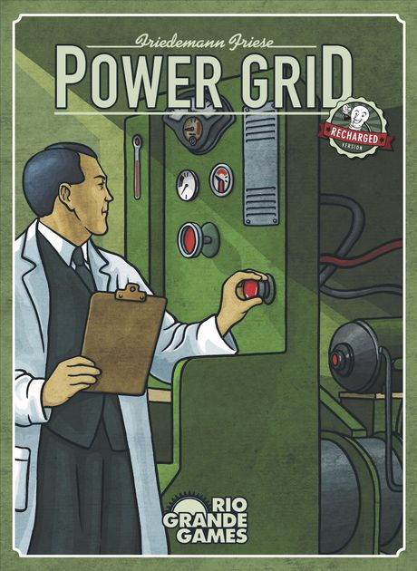
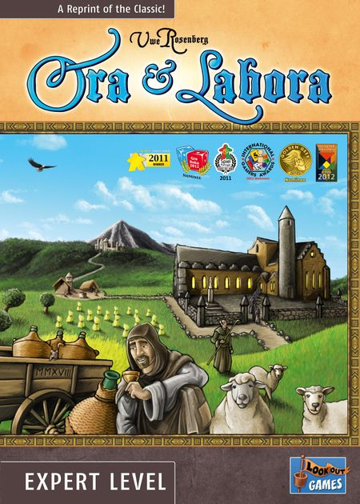

Your games need More Stuff. You know it. We know it. We make it. For years, we've been creating miniature fan expansions and keeping them all to ourselves, until now. All conetent on this page constitutes our tribute to and admiration of the original publishers and designers, is used without permission, and will be removed upon request to PearCaravelGames@gmail.com. We're working on third-party file hosting for these things at the momemnt (so no download links are present), but watch this space. For More. Stuff.
 Our mini-expansion for Ted Lehmann's Race for the Galaxy uses the blank cards distributed with The Gathering Storm expansion to create a 20-card cycle inspired by Isaac Asimov's Foundation series, continuing the franchise's tradition of coy nods to popular sci-fi settings. We add more cards to every keyword, a new homeworld, a new keyword ('foundation') and new 6-cost developments that score it. Finally, we add a hand-refinement mechanism to phase II.
 Our Stuff for Friedemann Friese's masterful Power Grid adds variable player powers in the form of 6 independent power companies designed for play on the US map. Each has a specialty which saves some money for you or creates some expenses for your opponents, and we've tracked and balanced these costs accross several games to balance the factions against one another. There's also an optional alternate end game scoring module which assesses each player's overall game performance, for those who find the drop-dead do-or-die outcome of this game a little abrupt or unsatisfying.
 Sean's favorite designer is Uwe Rosenberg. Our module for his Ora & Labora allows for variable solo play against a tough, randomized AI opponent by using the long two-player rules and a deck of action cards to simulate a player who is actively consuming resources and building for himself during the round, unlike the normal solo rules which give full control to the player. We're also working on a small expansion that adds 2 new kinds of plots and 2 new kinds of districts, with new buildings to match, making expansion a more strategic decision.